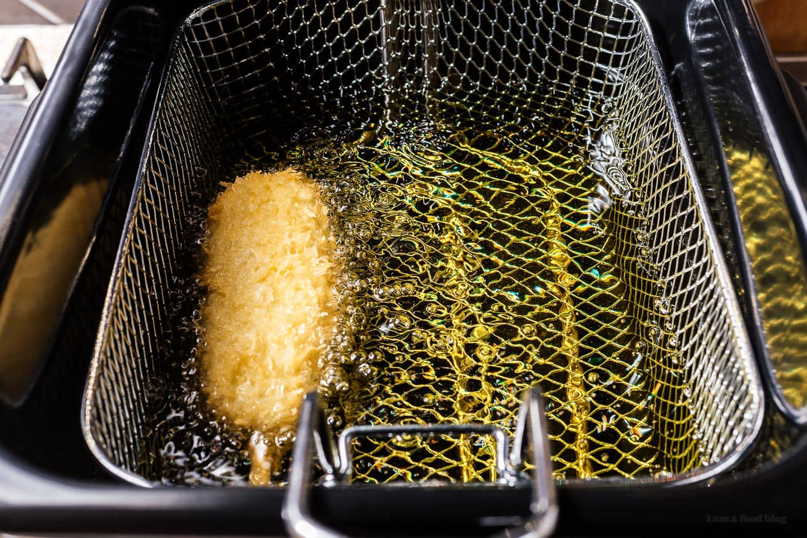

Deep Frying

The chemical reaction you've been waiting for
There is no going back after this
- Set the temperature to 350 degree
- Wrap the corndog with the batter
- Roll the battered up corndog in panko breadcrumbs
- Deep Fryer all over for 4-5 minutes until golden brown
- Enjoy!
Home page